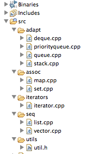

Create a new project called lab08a_stl
Make sure the boost library
In eclipse, create a folder in the src folder of the project called "sequences".
Into this folder incorporate the following source files:
Create another folder call "associations", to incorporate these files:
Create folder called "adapters":
Create a folder called "iterators" containing:
Now create a folder called "utils", incorporating:
You project structure should start to look something like this:

incorporate the following main program into the "src" folder itself:
In order to compile, you will need to place "util" on the include path.
Build and test.
Create a new folder called "shapes", and incorporate the following classes (all just headder files):
In the same folder, introduce this source file:
Adjust main.cpp to just call the function in this file only:
#include "util.h"
void vectest();
void listtest();
void dequetest();
void settest();
void maptest();
void stacktest();
void queuetest();
void priorityqueuetest();
void iteratortest();
void polytest1();
int main()
{
/* vectest();
listtest();
dequetest();
settest();
maptest();
stacktest();
queuetest();
priorityqueuetest();
iteratortest();*/
polytest1();
}
Build and test.
Can you explain the output?
Write a new function - polytest2(), such that shapes is an array of pointers.
void polytest2()
{
Shape* shapes[2];
shapes[0] = new Ellipse(Point (1,1), 10);
shapes[1] = new Rectangle(Point(2,2), 20, 10);
for (int i=0; i<2; i++)
{
shapes[i]->draw();
}
}
Run the program again - what is the difference in the output?
The for loop can be rewritten using the boost foreach (include 'util.h' to get the definition):
foreach (Shape *s, shapes)
{
s->draw();
}
void polytest3()
{
Ellipse e(Point (1,1), 10);
Rectangle r(Point(2,2), 20, 10);
list <Shape> shapeList;
shapeList.push_back(e);
shapeList.push_back(r);
foreach (Shape &s, shapeList)
{
s.draw();
}
}
Build and test. Can you explain the result?
Change Shape::draw() to be a pure virtual:
virtual void draw()=0;
Rebuild and test. Can you explain the error messages?
Try the following:
list <Shape*> shapeList;
shapeList.push_back(new Ellipse(Point (1,1), 10));
shapeList.push_back(new Rectangle(Point(2,2), 20, 10));
foreach (Shape *s, shapeList)
{
s->draw();
}
}
Build and test.
Notice that the objects are never deleted. Introduce a the code (perhaps using the foreach) to delete all of the shapes form the list.
Consider introducing a subclass of list - which would have a destructor which could carry out this cleanup.
This is a potential class here:
template <typename T>
struct mylist : public list<T>
{
mylist()
{}
virtual mylist()
{
foreach (T &s, *this)
{
delete s;
}
}
};
mylist <Shape*> shapeList;
shapeList.push_back(new Ellipse(Point (1,1), 10));
shapeList.push_back(new Rectangle(Point(2,2), 20, 10));
foreach (Shape *s, shapeList)
{
s->draw();
}
#pragma once
template < class T >
class Ref2
{
public:
Ref2(const T &s) {KillData = true; t = s.clone();}
Ref2(T *s) {KillData = false; t = s;}
Ref2(const Ref2 < T > &r) {KillData = true;
t = r.t?r.t->clone():NULL;}
Ref2() {if (t && KillData) delete t;}
Ref2& operator= (const Ref2 < T > & r) {if (t && KillData) delete t;
KillData = true;
t = r.t?r.t->clone():NULL;
return *this; }
T* operator->() const {return t;}
int operator< (const Ref2 < T > & r) const {return t?r.t?(*t) < (*r.t):false:true;}
operator T&() const {return *t;}
operator T*() const {return t;}
T& operator*() const {return *t;}
protected:
T *t;
private:
bool KillData;
};
list <Ref2 <Shape> > shapeList;
shapeList.push_back(Ellipse(Point (1,1), 10));
shapeList.push_back(Rectangle(Point(2,2), 20, 10));
foreach (Shape *s, shapeList)
{
s->draw();
}
Compilation will fail - as this template requires a "clone" method in the shape classes.
Introduce these now:
// Shape...
virtual Shape* clone() const
{return 0;};
//... Ellipse...
Shape* clone() const
{
return new Ellipse(origin, radius);
}
//... Rectangle..
Shape* clone() const
{
return new Rectangle(origin, width, height);
}
Build and test
Can you account for all of the objects being created/destroyed?
What happens if the following is introduced:
static Ellipse persistentEllipse(Point(20,20), 22);
shapeList.push_back(&persistentEllipse);
list <Ref2 <Shape> > shapeList;
shapeList.push_back(new Ellipse(Point(20,20), 22));
#include <boost/ptr_container/ptr_list.hpp>
using namespace boost;
ptr_list <Shape> shapeList;
shapeList.push_back(new Ellipse(Point (1,1), 10));
shapeList.push_back(new Rectangle(Point(2,2), 20, 10));
ptr_list <Shape>::iterator i;
for (i=shapeList.begin(); i##=shapeList.end(); i++)
i->draw();
foreach (Shape &s, shapeList)
{
s.draw();
}
Rework the last lab to use
ptr_container library
boost foreach loops.